About Me
I am a 17-year-old aspiring software developer and cybersecurity analyst. Over the years, I have developed a deep passion for physics, game development, and cybersecurity. My journey into coding began at the age of 15, and ever since then, I have been fascinated by the endless possibilities it offers. Currently, I am a student studying Computer Science and Mathematics at Vanier College. I wholeheartedly immerse myself in these subjects and have acquired proficiency in programming languages such as Java, CSS, Xojo, and HTML.
Projects

Super Risk was my final project for my high school coding class. The game allows you to take charge of a faction in a fictional history-inspired war. Turn by turn, you need to conquer land and defeat your neighbors. This map-based turn-based strategy game was entirely coded in Xojo.

Tic-tac-toe was one of the first projects I ever worked on. I created a fully programmed version in Xojo, which includes a player vs. computer mode. The computer opponent is quite skilled and provides a challenging game. This project helped me develop a strong foundation in programming principles.